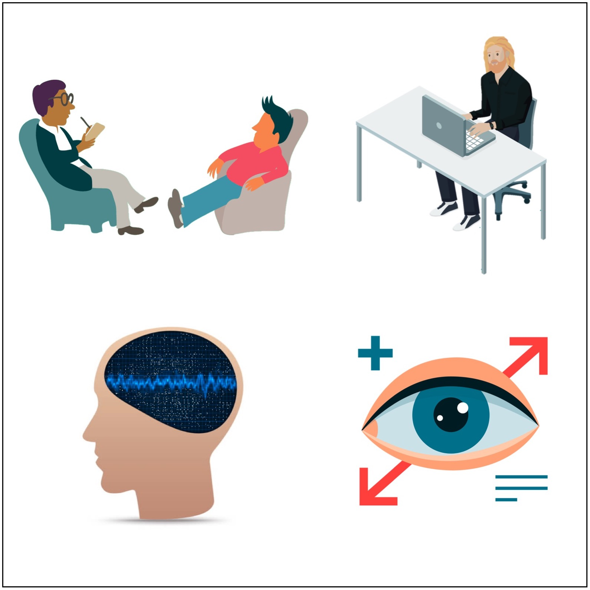
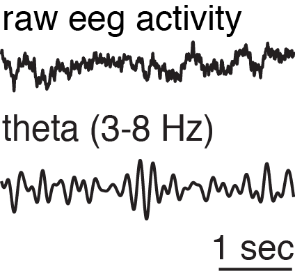
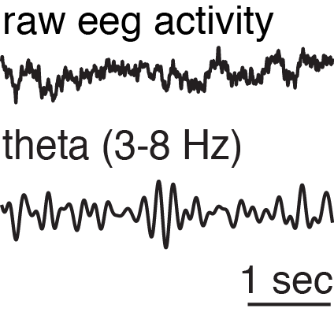

Understanding the depth of human behavior
Human behavior arises from both unconscious and conscious sources. A simple example is breathing -- we don’t usually think about inhaling and exhaling. However, you can take control of your breathing. By commanding your attention to your breath, you can breathe quickly or elongate your inhales. This combination of conscious and unconscious processing is an area of intense research. Even researchers who study exclusively conscious cognitive processes (as I do), have to contend with influences of unconscious processing.
A helpful metaphor for understanding human cognition is to think of processes that fall on a consciousness continuum. The consciousness continuum goes from completely unconscious neural activity to the fully conscious explanations we articulate about why we do things. My studies have touched upon 4 layers: neural processing, eye movements, behavior (i.e. actions you take), and feedback (i.e. explanations you have for those actions). Incidentally things at the bottom of the consciousness continuum happen at a much much faster time scale than things at the top. As such, studying memory has required a different tools for understanding each layer.
My research attempts to track phenomena as they influence one another across the various levels of the consciousness continuum.
Neural Processing
A human brain is composed of an estimated 100 trillion neural connections. Unsurprisingly, we don’t have much insight into it's inner workings. Neuroscientists have developed several different approaches to measuring the activity of a living working brain (fMRI, EEG), but each of these techniques has it's own limitations.
fMRI measures blood flow. It roughly tracks which parts of your brain are currently "thinking", because oxygenated blood flows to regions with a lot of neural activity. fMRI has become hugely popular in the medical community because it was the first technique to be able to measure 3D activity throughout an entire human brain to millimeter-scale resolution. However, blood flow is roughly 10,000 times slower than neural activity (10-15 seconds compared to tens of milliseconds). so we can't get precise timing about when the brain responds to a stimulus.
fMRI activity related to memory
 

I've also used EEG (electroencephalography), which measures electrical activity from the brain at millisecond timescales. This lets us measure at a resolution where we can capture neural activity as it unfolds. This technique comes in a couple forms, and I've used two of them: scalp EEG, which measures from electrodes around someone's scalp, and intracranial EEG, which measures from electrodes that have been surgically implanted deep into a patient's brain.
The most common form, scalp EEG, looks like a shower cap. While it has precise temporal resolution, it detects electrical activity that has traveled through the brain up to the scalp. A major weakness is that we are unable to see exactly where the signals are coming from. Intracranial EEG, on the other hand, can measure activity from specific regions deep in the brain because electrodes on tiny needles have been impaled deep into a patient's brain. Intracranial EEG is used clinically for epilepsy patients seeking to pinpoint the exact location of their seizures, so that it can potentially be removed with surgery. The process of pinpointing this location takes about a week. I work with epilepsy patients while they are undergoing this treatment.
Eye movements
Eye movements occur more rapidly than you might think. You look at 3 to 5 distinct places every second. You are only consciously aware of only a subset of these movements. Different processes (e.g. perception, attention, and memory) can dictate what you look at and when, before you have the chance to make a conscious decision about where to look.
For example, imagine a small child did something wrong -- he broke the cookie jar and crudely hid it behind a chair. You ask, what happened to the cookie jar? He doesn’t say anything, but you know immediately by his gaze where the cookie jar remnants are. His eyes couldn’t help but look at the evidence. [I've designed experiments to directly measure this phenomena](eyes.html){:target="_blank"}.
Of course we also move our eyes deliberately. We can choose to look at a painting or choose to look under the couch for the tv remote. The main point is, eye movements can provide rich information about what a person might be thinking as their thoughts unfold.
Behavior
A behavior is a specific action that you take. For cognitive neuroscientists, behavior is usually measured in how well you can complete a task (like recognize whether you've seen an image before or not). By measuring brain activity while you are doing very specific tasks, scientists learn which unconscious mechanisms are involved in conscious behaviors.
Behavior, however, occurs on much much slower time scales than the unconscious eye movements and neural activity. The outcome of a trial lets us see what conclusion your thought process led you to. It does not let us analyze all of the individual events and subprocesses that led you to that specific behavior.
Feedback
I ask participants for feedback when I’m trying out a new experiment and working out the kinks. After they complete a task, I’ll sit down with the participants and ask them their thoughts on the task. What strategy did they use? Did it feel too hard? Was there anything peculiar about the stimuli? Getting direct feedback from the participants saves a lot of time when I’m designing new experiments. You don’t want to end up with an experiment with some glaring errors that were readily detected by the participants. Also, people are pretty perceptive, so it’s useful to take advantage of their thoughts to improve your design.